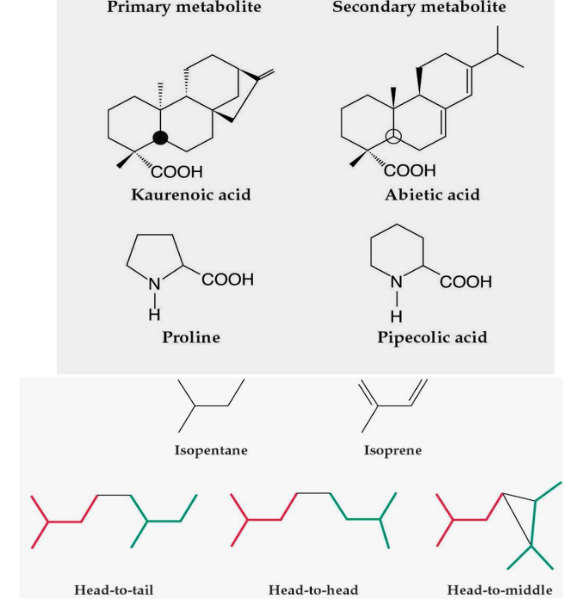
11 Secondary Metabolism in Plants
Secondary metabolites in plants have important physiological functions that help the plants survive and thrive. These functions can be understood in various ways.
One key role of secondary metabolites is to protect plants against herbivores (animals that eat plants) and microbial infections (tiny organisms like bacteria and fungi that can harm the plant). Think of these metabolites as the plant’s defense system, like a shield that keeps them safe from harm.
Another way secondary metabolites benefit plants is by acting as allelopathic agents. This might sound complex, but it simply means that these chemicals give plants an advantage in competing with other nearby plants for resources like sunlight and nutrients. In other words, they help the plant be the strongest one in the neighborhood.
Plants also use secondary metabolites to attract pollinators and animals that help disperse their seeds. Imagine these metabolites as a sweet fragrance or a colorful flower that says, “Hey, come visit me!” to bees, butterflies, and other creatures. In return, these visitors help the plant reproduce by carrying pollen or spreading its seeds.
11.1 Terpenoids
Terpenoids are a type of plant natural product, and they’re quite interesting because they come in many different shapes and sizes. They are the most diverse group of plant chemicals, and they play a crucial role in the plant world.
These terpenoids were first discovered in turpentine, which is a semi-fluid resin primarily obtained from pine trees. So, when you think of pine trees, you can also think of terpenoids.
What’s really cool about terpenoids is that they are all made from smaller building blocks called C5 units, which are based on a structure called isopentane. These C5 units can combine in various ways, kind of like building blocks in a construction set. So, just like you can create different structures using the same set of Legos, plants can make a wide range of terpenoids by combining these C5 units in different ways.
11.1.1 Classifying Terpenoids
Terpenoids, those diverse plant chemicals, can be classified based on the number of five-carbon units they contain. This classification helps us understand how they work and what they do.
First, there are hemiterpenes, which have just one isoprene unit. Isoprene is a small part of a terpenoid. An example of hemiterpenes is when some C3 plants emit isoprene at high temperatures. This can lead to the formation of NO2, a chemical that plays a role in various processes.
Next, we have monoterpenes, which contain two isoprene units. Monoterpenes are often found in the fragrant essences of flowers and the essential oils of herbs and spices. Think of the delightful scents you get from flowers and herbs like lavender or mint – that’s thanks to monoterpenes.
Lastly, there are sesquiterpenes, which contain three isoprene units. These compounds can be found in essential oils, phytoalexins (substances that help plants defend against microbes), and antibiotic compounds that protect plants from microbial challenges. They can also act as antifeedants, which discourage animals from eating the plants.
11.1.1.1 More Kinds of Terpenoids
Terpenoids come in different types, and they are categorized based on the number of five-carbon units they contain. Here, we’ll explore a few more of these types to give you a better idea of their diversity.
First, we have diterpenes, which have four of those five-carbon units. Diterpenes can be found in various plant compounds like phytol, which is a part of the chlorophyll molecule responsible for photosynthesis. They’re also present in substances like gibberellic acid (GA), phytoalexins (which help plants fight off microbes), and taxols. Norditerpenoids are a related group that lost one carbon along the way in their structure.
Triterpenes, on the other hand, are made up of six of these five-carbon units. They often consist of two C15 chains head-to-head, and they can be found in different plant compounds, including brassinosteroids, certain phytoalexins, various toxins that deter animals from eating the plants, and components of surface waxes, such as oleanolic acid found in grapes.
Tetrapenes are a step up, as they’re made of a whopping eight of these five-carbon units (a total of 40 carbon atoms). You can find tetrapenes in carotenoids, which are responsible for the bright colors in fruits and vegetables, like the orange color in carrots.
Polyterpenes, as the name suggests, are long chains of these five-carbon units and are responsible for rubber production. They are used in making things like tires.
Finally, we have meroterpenes, which have mixed origins and are partially derived from terpenoids. They are involved in the synthesis of compounds like cytokinins and alkaloids, which have terpenoid fragments in their structure. These compounds have various roles in plant growth and defense.
11.1.2 Creating Terpenoids
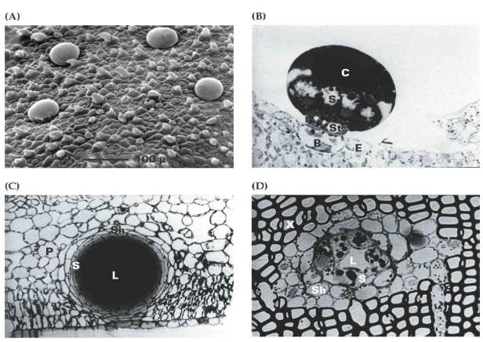
Plants have some highly specialized structures that are like secret factories for making, releasing, or storing terpenoids. These structures help the plants in various ways.
One of these special structures is called a “glandular trichome.” Think of it as a tiny, specialized cell or group of cells on the plant’s surface. These glandular trichomes are like the plant’s perfume factory, producing terpenoid essential oils. These oils often give flowers their unique scents and can attract pollinators, like bees and butterflies.
Another structure is the “secretory cavities,” which are like tiny storage spaces within the plant. They also play a role in producing terpenoid essential oils and are usually found in the flowers. So, they’re like the plant’s treasure chest of scents.
Conifers, like pine trees, have their own special structures for terpenoids called “resin ducts and blisters.” These are like the plant’s defense mechanisms. They produce a substance called resin, which contains terpenoids like terpentine. This resin can protect the plant from pests and diseases.
11.1.2.1 Further Plant Structures
Plants have some special structures that are like dedicated factories for making, releasing, or storing terpenoids. These structures are essential for various plant functions.
The plant’s outer layer, known as the epidermis, plays a role in making triterpenoid surface waxes. These waxes act like a protective shield, similar to how sunscreen protects our skin from the sun. They help the plant conserve water and prevent it from losing too much moisture.
Another structure called “laticifers” is like a terpenoid factory for certain triterpenes and polyterpenes, such as rubber. Laticifers are long, tube-like cells that store these valuable substances. Rubber, for example, is a well-known terpenoid produced by some plants.
These specialized structures are like secret vaults where the plant keeps its precious terpenoid products. By doing this, they prevent these chemicals from interfering with the plant’s important metabolic processes.
11.1.2.2 Isoprene Rules
Understanding how terpenoids are built is like following a set of rules, and two important scientists made significant contributions to these rules.
The first rule is called the “Isoprene rule.” This rule suggests that most terpenoids could be constructed by repeatedly joining small units called isoprene. Think of isoprene as a building block, and by putting many of them together, you can create a wide variety of terpenoids. Otto Wallach’s work on this concept earned him a Nobel Prize in 1910.
The second rule is known as the “Biogenetic isoprene rule.” This rule says that a compound is considered an isoprenoid if it is made biologically from an isoprenoid precursor, with or without rearrangements. It’s like saying a cake is still a cake, even if you mix up the ingredients a bit. Leopold Ruzicka was awarded a Nobel Prize in 1939 for his research related to this rule.
11.1.2.3 Steps in Isoprene Biosynthesis
The process of making terpenoids can be broken down into four steps, kind of like following a recipe to create a delicious dish.
The first step involves making a fundamental precursor called IPP, which stands for Isopentenyl Pyrophosphate. Think of IPP as the basic ingredient you need for your dish.
Next, we have the second step, which is like adding more ingredients to your dish. In this case, you repeatedly add IPP to create a series of prenyl diphosphate homologs. These homologs serve as the precursor molecules that form the building blocks for terpenoids. It’s like gathering the key components for your recipe.
The third step is where the magic happens. Specific enzymes called terpenoid synthases take these prenyl diphosphate molecules and turn them into the parent carbon skeletons of the terpenoids. These skeletons are like the structure of your dish, providing the basis for its flavor and texture.
Finally, in the fourth step, secondary enzymes come into play. They make further modifications to these carbon skeletons, giving rise to the unique functional properties and incredible diversity of natural terpenoid products. This is where your dish gets its special flavors and characteristics, making it stand out from the rest.
11.1.2.4 Synthesis Locations
First, let’s talk about the cytoplasm and the endoplasmic reticulum (ER). In these areas, you’ll find the production of terpenoids like sesquiterpenes (which have 15 carbon atoms), triterpenes (30 carbon atoms), and polyterpenes. Think of it as the factory floor where these larger terpenoids are manufactured.
On the other hand, plastids are like another factory within the plant cell. They are in charge of making terpenoids with different sizes, such as isoprene (5 carbon atoms), monoterpenes (10 carbon atoms), diterpenes (20 carbon atoms), and tetraterpenes (40 carbon atoms). It’s like having a separate kitchen in your house for making specific types of dishes.
What’s interesting is that the way these compounds are made can be a bit different in each of these locations. It’s like having different recipes for different rooms in your house. The plant uses these distinct compartments to create a wide variety of terpenoids, each with its own purpose and function.
11.1.2.4.1 Mevalonate Pathway for forming IPP in Cytosol
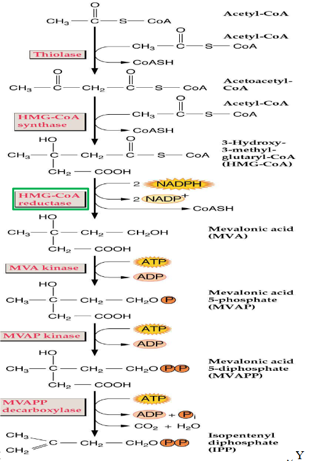
The mevalonate pathway is like a recipe for making something important in the plant cell – a compound called IPP (Isopentenyl Pyrophosphate). It happens in the cytosol, which is a part of the cell.
First, this pathway involves a two-step process where three molecules of acetyl-CoA come together. It’s like combining a few key ingredients to start making a special sauce.
The next step is turning HMG-CoA, which is the result of the previous process, into mevalonic acid. This transformation involves processes like phosphorylation and decarboxylation, which might sound complex but are just ways of changing the structure of the molecule.
Interestingly, the mevalonate pathway isn’t exclusive to plants. It’s also used by animals, including humans, to create cholesterol, a vital substance for our bodies.
11.1.2.4.2 Mevalonate Pathway for Forming IPP in Plastid
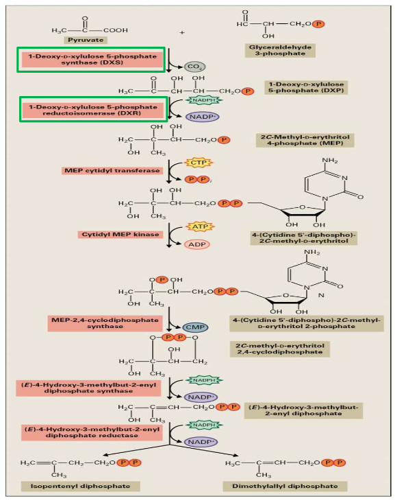
The MEP pathway is like another recipe, but this time, it’s used in the plastids of plant cells to make IPP (Isopentenyl Pyrophosphate).
In the first step of this pathway, two molecules containing three carbon atoms each (C3) come together to form a single molecule with five carbon atoms (C5). It’s a bit like taking two small puzzle pieces and fitting them together to make a bigger, more complex piece.
Cytidine triphosphate, which is another molecule, plays a role in creating a cyclic diphosphate. Think of it as a special ingredient that helps everything come together and take the right shape.
The final part of this pathway involves two reduction steps, which are like making some adjustments to the molecule. These steps result in the production of two isomers: IPP and DMPP. Isomers are like twins – they have the same ingredients, but their arrangement is slightly different.
11.1.2.5 Forming Terpenoids from IPP
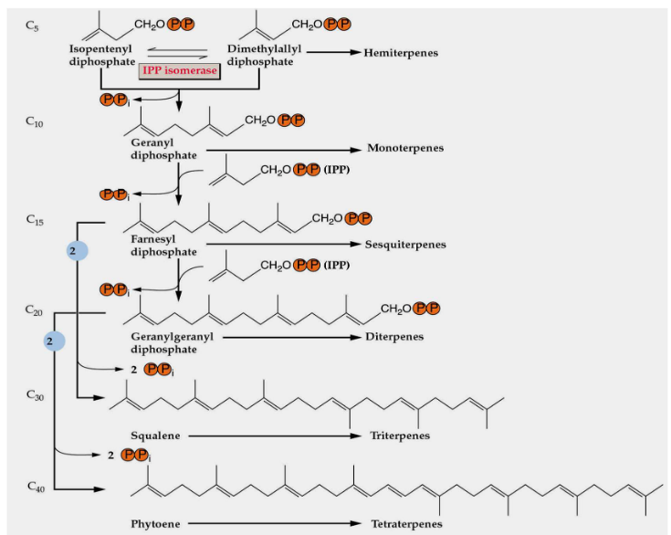
To create different types of terpenoids from IPP (Isopentenyl Pyrophosphate), a repetitive process takes place. It’s like a simple pattern that’s followed to build various terpenoid structures.
This repetitive process involves adding units with five carbon atoms (C5 units) over and over again. These additions are made by special enzymes called prenyltransferases. Think of these enzymes as workers on an assembly line, adding one piece after another to construct the final terpenoid product.
11.1.2.6 Forming Monoterpenes
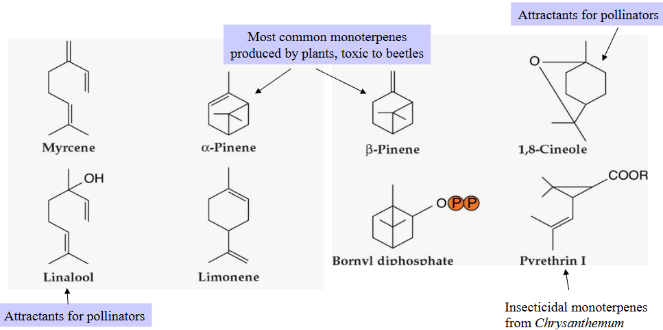
The structures of monoterpenes, which are a type of terpenoid, are quite simple to understand. They are mainly formed by joining isoprene units in a head-to-tail fashion. Think of isoprene units as small building blocks. When these units are linked together, one after the other, they create the structure of a monoterpene.
However, there are also a few exceptions in the world of monoterpenes. Some monoterpenes don’t follow the usual “head-to-tail” pattern and have irregular structures. It’s like most of the cars on the road following traffic rules, but there are a few that go their own way.
11.1.2.7 Forming Triterpenes
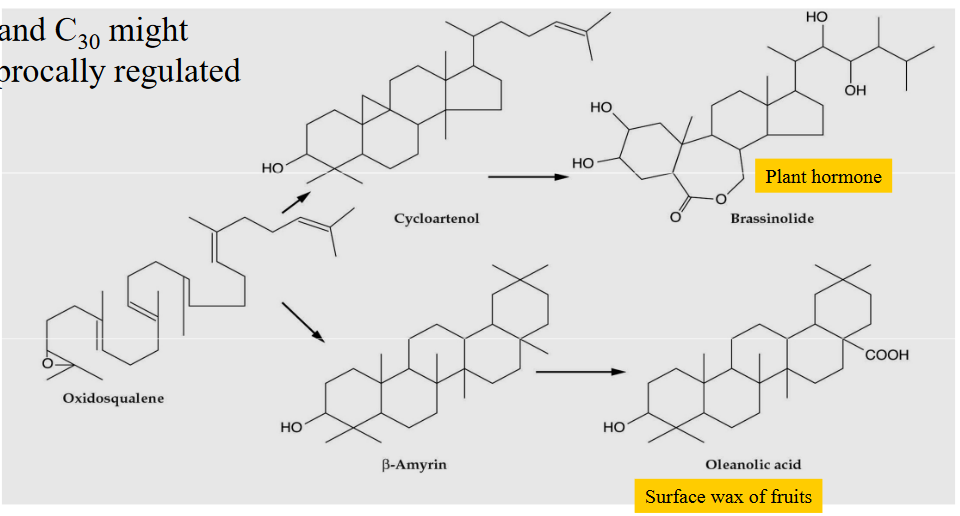
First, two molecules of FPP (Farnesyl Pyrophosphate) are joined head-to-head. Think of this as taking two puzzle pieces and connecting them to create something new, which, in this case, is called squalene.
After squalene is formed, it goes through an oxidation process. This is like adding some seasoning to your dish to enhance the flavor and make it even better.
What’s interesting is that the production of triterpenes, which can have 15 carbon atoms (C15) or 30 carbon atoms (C30), is regulated in a reciprocal manner. It means that the amounts of these two types of triterpenes can influence each other. If you make more of one, it might affect the production of the other, like balancing the ingredients in a recipe to get the right taste.
11.1.3 Rubber
Natural rubber is a fascinating material made by plants, and it’s actually a type of polymer. Imagine a polymer as a long chain made up of lots of small units. In the case of rubber, these small units are called isoprene. When you put many isoprene units together, you get a long chain of rubber.
Back in 1877, a bunch of tiny seedlings from a plant called Hevea brasiliensis arrived in the Singapore botanic garden. Some of these little plants were grown in Singapore, while others were sent to gardens in the Malay Peninsula. These plants turned out to be the starting point for the rubber industry in Southeast Asia (SEA) and China. Rubber production became a significant part of their economies.
Now, let’s talk about what rubber does for the plant itself. It serves a few important functions:
First, it can be like stored food for the plant. Just as we keep snacks in our pantry for later, the plant stores rubber as a potential energy source.
Second, rubber can also be a way for the plant to get rid of waste products. Imagine it as the plant’s version of taking out the trash.
Third, rubber can act as a protective shield. If the plant gets injured, the rubber helps form a layer that dries and hardens, preventing harmful fungi and bacteria from entering the plant.
Lastly, it might also protect the plant from animals that like to munch on it. The toughness of rubber can deter browsing animals from eating the plant, almost like a natural armor.
11.1.4 Sesquiterpenes
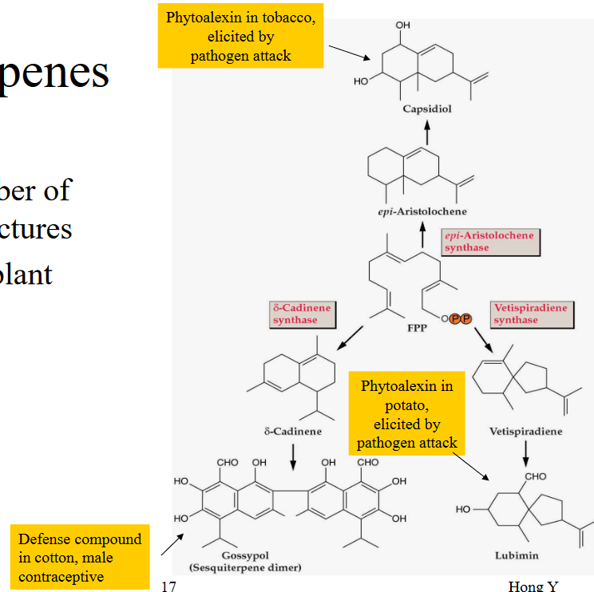
Sesquiterpenes are a group of terpenoids that are known for their greater diversity in terms of skeleton structures. In simple terms, they have more variety in the ways their molecular structures are arranged compared to other terpenoids.
One of the important roles of sesquiterpenes in plants is their involvement in plant defense. They act like a protective shield, helping the plant defend itself against threats such as herbivores (animals that eat plants) and microbial infections. Think of them as the plant’s armor, offering extra protection in the world of nature.
11.1.5 Monarch Butterfly
One of the most remarkable things about Monarch butterflies is that they are the only species known for long-distance migration among all butterflies. Just like birds, they embark on incredible journeys. In the autumn, they travel south to escape the cold, and in the spring, they journey back north to their breeding grounds.
Monarchs are so iconic that they are designated as the national insect of the United States, sharing this honor with the honeybee. It’s like a symbol that represents the natural beauty and diversity of the country.
However, Monarch butterflies have also become the subject of various controversies. These include concerns related to deforestation, the preservation of milkweed plants (which are essential for their survival), and debates about genetically modified (GM) food and its potential impact on these magnificent creatures.
11.1.5.1 Monarch Butterfly and Plant Chemicals
The Monarch butterfly has a fascinating way of dealing with plant chemicals. It’s like a special adaptation that helps them thrive.
Monarch butterflies have a unique diet, and they prefer to feed on milkweed plants, specifically the Asclepias species. These milkweed plants contain toxic compounds known as cardenolides. It’s like Monarchs have a taste for something others find unpalatable.
When Monarch butterflies feed on milkweed, they not only consume these cardenolides but also accumulate them in their bodies. This is where the magic happens. These toxic compounds make the Monarchs themselves toxic to predators, such as birds. It’s like the Monarchs are arming themselves with a secret weapon.
But here’s the twist – even the predators have evolved in response to this. Some birds have adapted to tolerate these toxins, so they can still eat Monarchs without getting sick. It’s like an ongoing game of survival where both the prey and the predators keep adapting to one another.
11.1.6 White Flies Hijacking Plant Defense Genes
In a fascinating turn of events, the white fly, which is a common pest in agriculture, managed to pull off something remarkable. This little insect, known as Bemisia tabaci, has found a way to hack into a plant’s defense system.
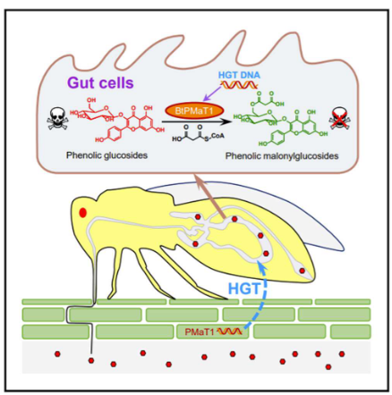
During this process, the white fly acquired a specific gene called PMaT1 from a plant. This transfer of genetic material from a plant to an insect is known as a “plant-to-insect horizontal gene transfer event.” It’s like the white fly sneaking a piece of the plant’s genetic code for its own benefit.
What’s even more intriguing is that this acquired gene, PMaT1, gives the white fly a superpower. It enables the white fly to neutralize or detoxify certain plant defense compounds, specifically phenolic glucosides. These are like the natural defenses that plants use to protect themselves.
As a result, the white fly can continue to feed on its plant hosts without being harmed by the plant’s defenses. It’s almost as if the white fly found a way to outsmart the plant and enjoy a meal without any consequences.
11.2 Alkaloids
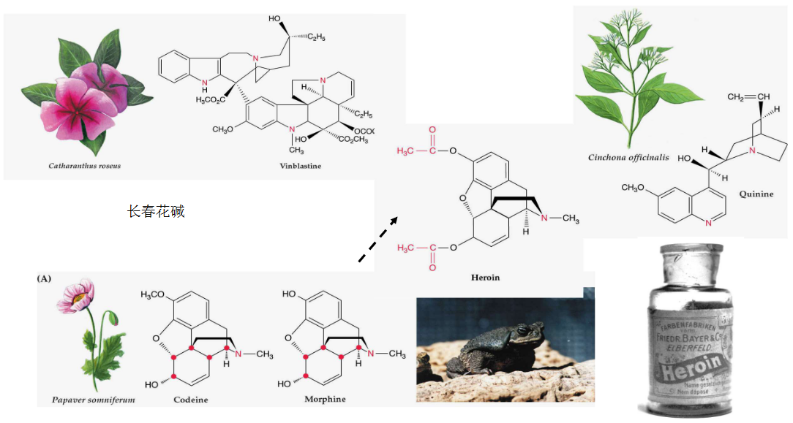
Alkaloids are a group of natural compounds found in plants, and they have some special properties. These compounds are known for being pharmacologically active, which means they can have effects on living organisms. They contain nitrogen and have a basic chemical structure.
Alkaloids have been part of human history for a long time. They’ve been used for various purposes, such as poisons, medicines, and as ingredients in concoctions and potions. So, you can think of them as the ancient ingredients in the recipes of traditional healers and herbalists.
What’s really interesting is that a significant number of flowering plants, around 20%, produce alkaloids. Some plant species can produce more than 100 different alkaloids. It’s like having a treasure chest of compounds in the plant world, each with its unique properties and uses.
11.2.1 Opium Wars
The Opium Wars are historical events that vividly illustrate how the trade and impact of a plant-derived substance can influence geopolitics, the relationships between countries.
These two wars, fought between Britain and China in the years 1840-42, were mainly over the trade of opium. In the early 19th century, there was a significant increase in the import of opium to China. The Chinese Emperor responded by ordering the ban of opium trade due to the negative social and health consequences it was causing in the country.
However, the British Empire had a different perspective. They saw opium as a profitable commodity for commercial trade. The import of opium to China helped balance Britain’s substantial trade deficit with China, where they were buying a lot more Chinese goods than they were selling. So, opium trade was a way to address this imbalance.
The Opium Wars and the “unequal treaties” that were signed afterward had a significant impact on China. They played a part in the weakening and eventual downfall of the Chinese Empire.
As a side note, in January 1819, Sir Thomas Stamford Raffles of the English East India Company landed in Singapore, which eventually became a crucial trading port. This was also a part of the larger picture of colonial and commercial interests of the time.
11.2.2 Alkaloids and Plant Defense
Alkaloids play a crucial role in the chemical defense strategies of many plants. They have a wide range of effects on animals and insects, which help plants protect themselves.
One example is pyrrolizidine, which is toxic to mammals. It’s typically found in the inflorescences (flower clusters) of the Senecio genus. Interestingly, some pyrrolizidines are harmless until they encounter cytochrome P450 monooxygenases in the liver. These enzymes transform them into toxic substances. It’s like a secret defense mechanism that gets activated only when needed.
Quinolizidine alkaloids, mainly produced by the Lupinus genus (commonly known as lupines), are found in high amounts in lupine seeds. These alkaloids are toxic to grazing animals. This plant-animal interaction is like a game of survival where animals learn to avoid lupine-containing plants.
Alkaloids like nicotine and caffeine serve as defenses against insects. When a plant is wounded, it stimulates the synthesis of nicotine. This is a fast response that creates N-acyl nicotines, which are highly toxic to hornworms, a type of insect. After about 36 hours, there is an increase in alkaloid biosynthesis, providing extra protection. Jasmonate, a plant hormone, seems to be involved in upregulating alkaloid synthesis, essentially increasing the production of these defensive compounds when needed.
11.2.3 Stealing Alkaloids
In the world of plants, the defensive chemicals they produce, like alkaloids, can be so valuable that others might want to steal them. Yes, even in the plant kingdom, there are thieves!
One example of this plant theft occurs between lupines and Indian paintbrush plants. These two types of plants often grow together in the same areas, or “sympatric” regions. Indian paintbrush plants are a bit like freeloaders because they are hemiparasites. They graft their roots onto the roots of lupine plants and essentially steal water, nutrients, and defensive alkaloids from them.
Through careful studies in experimental gardens, scientists have discovered that Indian paintbrush plants extract alkaloids from lupines. These stolen alkaloids serve as a kind of protective shield for the Indian paintbrush. When herbivores come around looking for a snack, they are discouraged from eating the Indian paintbrush due to the defensive alkaloids it acquired from the lupine.
11.2.4 Manufacturing Alkaloids
Studying alkaloid biosynthesis, or how plants make these special compounds, can be quite challenging due to several reasons.
First, alkaloids have complex chemical structures. It’s like trying to understand a very intricate puzzle with many pieces. These structures can be tough to unravel.
Second, alkaloids often have multiple asymmetric centers. Imagine trying to balance a complex mobile with multiple moving parts. It’s not easy to keep everything in order.
Third, the concentrations of the enzymes responsible for alkaloid biosynthesis are typically quite low. This is like having very few workers in a factory, making it harder to observe their activities.
Additionally, a large number of other compounds like tannins and phenolics can interfere with the extraction of these active enzymes. It’s as if you have many distractions while trying to focus on a specific task.
Lastly, the rate at which natural product metabolism occurs in plants can be slow. This is similar to a factory that produces goods at a sluggish pace, making it challenging to study the process in action.
11.2.4.1 Methods for Studying Alkaloid Processing
Using a cell culture system for studying alkaloid biosynthesis is incredibly important for several reasons.
First, this system allows researchers to produce a significant quantity of alkaloids. It’s like having a mini alkaloid factory in the lab, where you can generate a lot of these compounds for study.
Another advantage is that cell cultures provide a year-round supply of plant material. This means researchers can work with plants regardless of the season. It’s like having an all-season garden at your disposal.
Additionally, cell cultures offer a more consistent and uniform state of development in the cells being studied. It’s like having a group of synchronized dancers who all move in harmony, making it easier to observe and analyze the process.
Moreover, cell cultures often have a compressed cell cycle, which means they go through their growth and division stages more quickly. This speeds up the research process, making it more efficient.
In addition to cell culture, researchers use other techniques for studying alkaloid biosynthesis. These techniques include precursor feeding experiments, which involve giving cells specific compounds to see how they transform them into alkaloids. Analytical techniques like mass spectrometry (MS) and nuclear magnetic resonance (NMR) are also used to analyze and identify the chemical compounds involved in alkaloid biosynthesis.
11.2.5 Berberine Synthesis
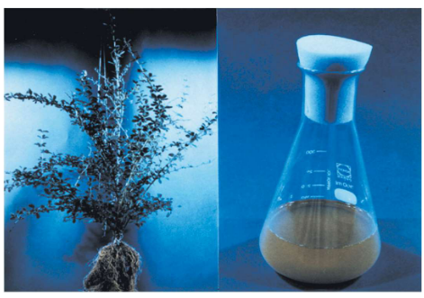
Berberine biosynthesis is a fascinating process, and it’s notable for a few reasons.
Firstly, it’s the first pathway of alkaloid biosynthesis that has been completely defined. Imagine it as solving a complex puzzle and finally figuring out all the pieces and how they fit together.
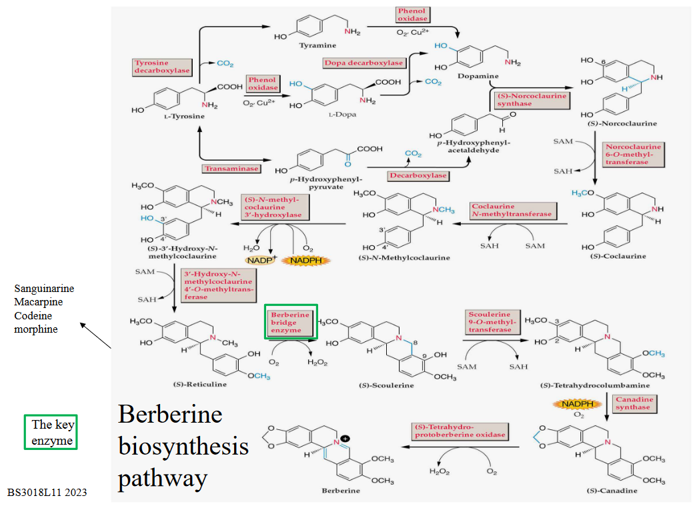
Berberine is a well-known alkaloid with powerful antimicrobial properties. It’s like a natural antibiotic that plants produce.
Researchers have made significant progress in understanding and studying berberine biosynthesis, thanks to highly efficient cell culture systems. These systems can yield impressive amounts of berberine, up to 7 grams per liter. It’s like having a specialized factory in the lab, cranking out this valuable alkaloid for various applications.
11.3 Plant Phenolics
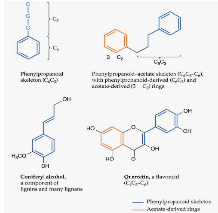
Plant phenolics are an interesting group of compounds that have played a significant role in plants’ adaptation from aquatic environments to life on land. Let’s break down their importance and functions.
In the evolutionary journey from water to land, plants needed to develop ways to support themselves and protect their cells. Phenolics have been crucial in this process, mostly by contributing to the structure of cell walls. Think of them as the bricks and mortar that make up the plant’s walls.
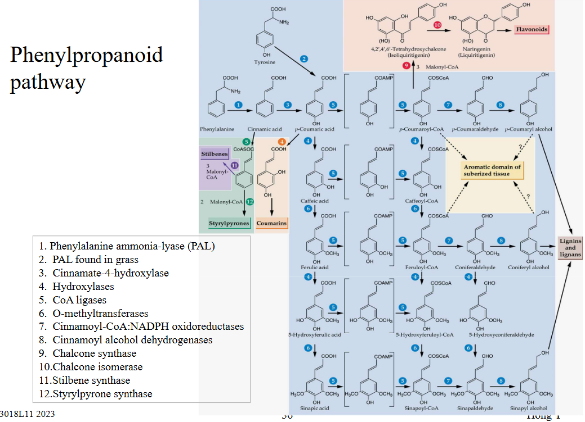
But phenolics are not just about structural support. They also serve other important functions. They can act as a defense mechanism, deterring herbivores and pathogens from damaging the plant. Phenolics even play a part in the colors of flowers, making them attractive to pollinators, and they can add flavor to various plant parts, like fruits.
Within the category of plant phenolics, there are several major types. Lignin is one of the most important, forming the sturdy framework of plant cell walls. Flavonoids are another type, contributing to flower colors and serving as antioxidants. There are also many other types of phenolics, each with their own unique roles in plant biology.
11.3.1 Manipulating Plant Phenolics
The manipulation of plant phenolic metabolism is a powerful tool that can lead to a range of beneficial outcomes.
One significant application is the creation of plants with enhanced resistance to pathogens. By modifying phenolic metabolism, scientists can help plants become better defenders against diseases and pests. It’s like giving the plant an upgraded immune system to protect itself.
Another area of interest is the improvement of wood quality and fiber products. By adjusting phenolic metabolism, researchers can enhance the strength and durability of wood, making it more valuable for various applications. It’s like turning ordinary wood into a super-strong building material.
Manipulating phenolic metabolism can also result in new or improved sources for pharmaceuticals. Certain plant compounds have medicinal properties, and tweaking phenolic metabolism can make these compounds more accessible for drug production. It’s like discovering a treasure trove of potential medicines hidden within plants.
Phenolic metabolism manipulation has applications in the nutraceutical industry, where plants can be engineered to produce compounds that promote health and wellness. It’s like turning plants into natural health supplements.
In horticulture, this technology can be used to create plants with enhanced features, such as unique colors or improved resistance to environmental stresses. It’s like designing custom-made plants to suit specific preferences and conditions.
Additionally, phenolic metabolism manipulation can be used to improve the flavor, fragrances, and odor of plants. This can lead to the creation of more appealing and aromatic products, whether in the food or cosmetic industry. It’s like adding a touch of magic to the sensory experience.
11.4 Lignin Synthesis
Lignin synthesis is an essential process in plants, especially in those with woody tissues like trees and in various vascular tissues. Here’s why it’s important:
Lignin is a type of noncellulosic material that serves as an encrusting substance in woody plant tissues. In fact, it’s one of the most abundant organic natural products found in plants, right after cellulose. It typically makes up about 20-30% of the total content in vascular tissues, which are like the plumbing system of plants.
In trees, lignin is responsible for the formation of secondary xylem tissues. These tissues help transport water and nutrients throughout the plant, providing support and structure. In herbaceous plants and grasses, lignin reinforces their vascular tissues.
One unique thing about lignin is that it can’t be isolated in its native state, meaning it’s challenging to extract and study directly. Instead, it’s formed from smaller building blocks known as monolignols. These monolignols include coniferyl alcohol, coumaryl alcohol, and sinapyl alcohol, which come together to create lignin.
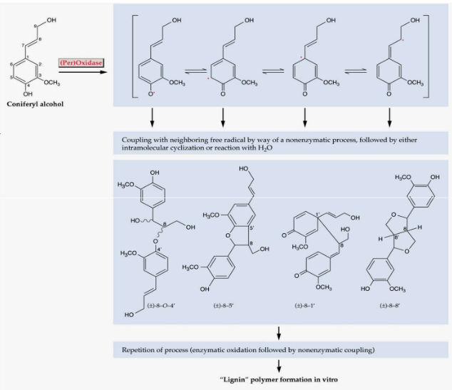
Lignin synthesis occurs after the overall architecture of the plant cell wall is already established. It’s like adding a protective layer once the main structure of a building is in place.
This synthesis process happens at specific sites within the plant cell, particularly in the cell corners and middle lamella. These are like the critical spots where lignin is needed to provide strength and support.
To assist in this process, cell wall proteins play a role. One such protein is the proline-rich protein, which aids in the formation of lignin. It’s a bit like having specialized workers on a construction site, making sure everything comes together correctly.
It’s worth noting that the way lignin synthesis happens in non-woody herbaceous plants and grasses can be somewhat different. These plants have their own unique methods for building and strengthening their cell walls.
11.5 Flavonoids
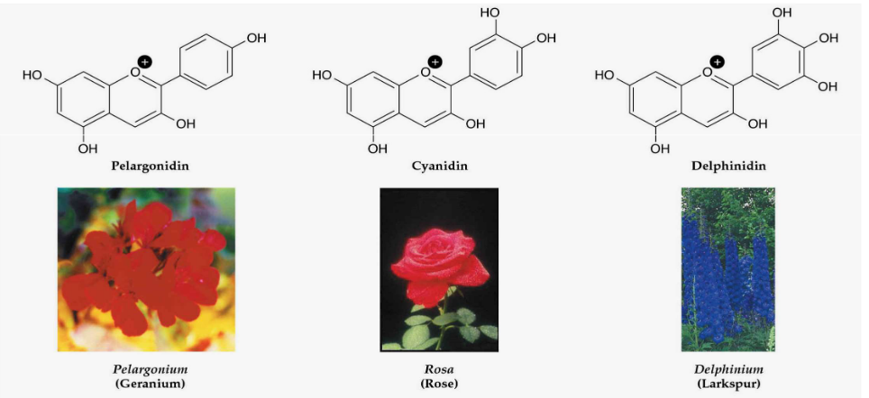
Flavonoids are a remarkable group of natural compounds found in plants, and they come in many varieties.
In fact, they make up an enormous class of phenolic natural products, with more than 4,500 different compounds falling under this category. Among them are anthocyanins, which are responsible for the vibrant pigments in many flowers and fruits, and proanthocyanidins, which are like condensed tannins, known for their astringent taste.
Flavonoids are found in most plant tissues, often stored in vacuoles, which are like plant storage units. What’s interesting is that they can exist in different forms, whether as single molecules, paired as dimers, or even in longer chains as polymers.
These compounds have diverse functions in plants. Some play a role in plant-animal interactions. For example, they can attract pollinators like bees and butterflies, helping in the plant’s reproductive process. On the flip side, flavonoids like condensed tannins act as antifeedants, discouraging herbivores from munching on the plants.
Flavonoids also have additional functions like protecting the plant from harmful UV radiation, much like sunscreen for us, and they can act as signaling molecules within the plant to trigger various responses.
11.5.1 Coumarins
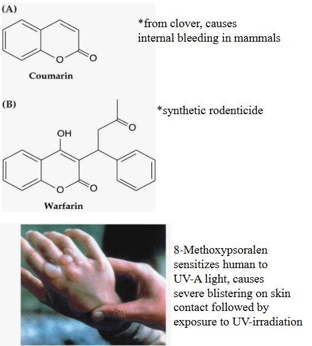
Among the various plant phenolic compounds, coumarins are a notable group. They belong to a category called benzopyranones and are relatively numerous, with over 1,500 different members.
Coumarins are primarily associated with the defense mechanisms of plants. They play a crucial role in protecting plants from various threats, such as herbivores and pathogens. It’s like having a team of guardians that stand ready to defend the plant when danger approaches.
11.5.2 Stilbenes
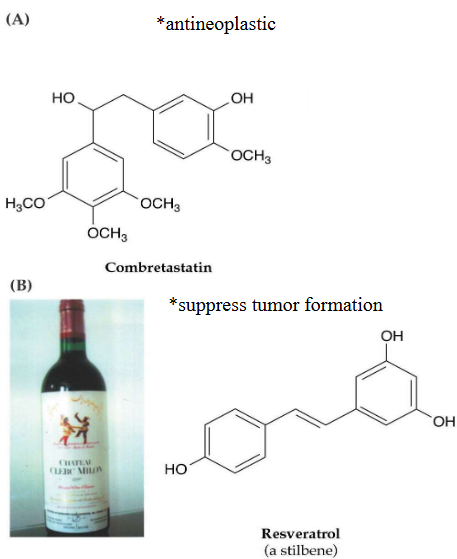
Stilbenes are another interesting group of plant phenolic compounds, and there are more than 300 different types known today.
These compounds have several important functions in plants. One of their key roles is to act as antifungal agents, helping plants ward off fungal infections. It’s like the plant’s own natural defense against harmful fungi.
Stilbenes can also serve as antifeedants, making the plant less appealing to herbivores. It’s a bit like giving the plant a bitter taste that discourages animals from munching on it.
These compounds are involved in regulating processes like dormancy and growth inhibition in plants. They play a part in controlling when a plant rests and when it actively grows. It’s like the plant’s internal clock that helps it adapt to changing conditions.
Beyond their role in plants, stilbenes are also important in pharmacology and human health. Some stilbenoids have been studied for their potential health benefits in humans, making them a subject of interest in the medical field.